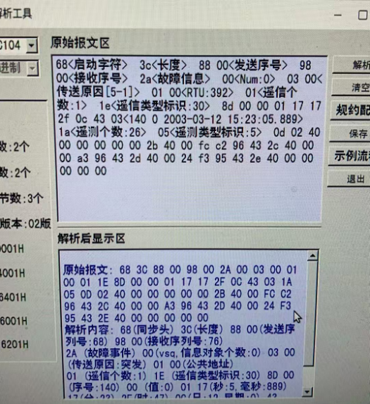
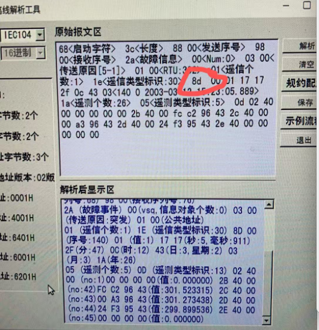

调试规定
一、调试准备阶段
- 终端厂家（提前一周）导出设备测试证书发至配网部，由配网部发至中国电科院完成签发认证。
- 终端厂家提供终端相关信息（正式证书、终端检测报告、sim卡IP）至配自主站，由配自调试人员建立通道。
- 配自主站调试人员提供终端通道号和终端点表标准模版，终端调试人员根据点表模版进行本地配置。
注意事项：
- 主站调试人员需要检查终端正式证书和终端检测报告，通过证书编号在云主站应接必接中找到对应的记录，同时终端必须具备完整的检测报告方可接入配自主站。
- 检查sim卡是否为正确IP。
- 确认终端可以满足104规约（默认均使用国网安全防护104规约通信）。
二、调试阶段
1．终端报文流程
终端通电后可以快速上线，终端双向认证、总召、对时整套流程正常，确保终端报文通信正常。环网柜设备应保证环网柜门关闭时通讯正常，柱上开关应保证信号天线安装正确.
终端四遥验收
- 遥信：遥信信号要求与现场一致，现场动作或者复位，3秒内能上送至配自主站。
- 遥测：线电压默认为10kV；A、B、C、I0相电流与现场继保仪加量值保持一致（ABC三相电流5A，零序电流1A），单位为A；功率因数角45度（cosθ=0.707）功率默认为A、B、C相电流*线电压*1.732（P=7374kW，变比600/5），单位为kW。电流死区参考0.005，电流零漂参考0.002，如果造成遥测频发，应根据实际情况修改。
- 遥控：就地位置，遥控不允许执行（预置指令报错）；压板退出情况下，遥控执行报错（无法控制开关）；现场在远方和压板投入情况下，才可以进行遥控操作。电池活化应可以远程遥控。
- 遥调：终端需具备定值总召功能，具备远程下装及修改定值功能；核对相关定值信息是否与现场一致（三相CT变比、零序CT变比等）；核对零漂/死区的控制方式，确保零漂/死区修改生效。
2．终端保护测试
- 远程下装过流/零流I、II、III段保护定值和动作时限，确认终端已经投入过流/零流I、II、III段保护告警、跳闸功能，被试开关在合闸状态。
- 现场通过继保仪加量（1.05倍设定定值），终端应正确跳闸，主站观察终端保护动作及复位信号、观察开关跳闸信号、观察重合闸动作信号，各项保护信号均要正常上送。
- 查终端上送的故障事件信号，观察该功能是否正常，报文中的故障电流需与现场加量值保持一致。
- 现场通过继保仪加量（0.95倍设定定值），终端应可靠不动作。
3．录波文件召测
远程召测终端生成的录波文件，要求60s内能召测完成（cfg/dat 文件）。
注意事项：
- 遥信报文除cos外，还需监测对应的soe报文上送是否正常。
- 终端需要正确应答主站对时指令，确保终端时间与主站保持一致。
- 调试结束后，要求厂家对终端所有保护进行退出，配自调试人员进行召测检查。
- 配自调试人员如实填写调试记录，记录各项调试内容。调试不合格的终端反馈至运维单位。
- 调试结束后应要求现场所有开关保护退出。
- 大电流遮断闭锁保护按开关最大遮断容量核定并投入。
- 励磁涌流保护可根据现场需要选择性投入。
- 主站点表里“过流一段、过流二段、过流三段、零序过流一段、零序过流二段”并发事故总信号。交流失电不要事故总，终端装置异常不要事故总。退出任何不属于以上遥信的保护，如“退出低电压告警”、“退过电压告警”等等内部乱七八糟的告警。
- 零序电流电压：要求通过零序CT采集，不能通过三相电流合成。
- 蓄电池自动活化周期（90日）：
科大智能 8:00
珠海博威 9:00
东方电子 10:00
北京三清11:00
保定冀能12:00
珠海许继13:00
南瑞继保14:00
北京清畅15:00
金智科技16:00
山东电工17:00
平高电气18:00
合肥亿莱克19:00
国电南自20:00
湖北网安21:00
上海思源22:00
石家庄科林23:00
上海致达0:30
其他厂家：1:30
- 小电流接地告警未正确使用零序功率方向法，我们要求“区间内接地故障告警”，继保仪测试时，加u0180°，加3i0 0°。如果你加3i0（180°），加u0(0°)，那么你肯定是区内接地和区外接地一起报，那就是错误的。只有u0超前3i0 180°才报接地故障。
调试完成设置默认参数:
- 电流死区参考0.005
- 电流零漂参考0.002
- 功率零票0.001
- 零序电压越限启动录波:投(1)
- 零序电压越限启动录波定值:FTU:零序启动电压二次值15V; DTU:零序启动电压二次值1V;
- 零序电流越限启动录波:退(0)
- 小电流接地出口:退(0)
- 小电流接地告警:投(1);
- 小电流接地告警时间:5s;
- 事故总判小电流接地告警投退:退(0);
- 遮断闭锁保护: 退(0)
调试中常见问题
104规约故障事件
104规约故障事件中：传送原因2个字节，公共地址2个字节，信息体地址2个字节。
问题表现：第一个图片无法被解析出。

图1：无法解析的报文示例（3.png）
手动删除了报文8d后面的00就可以正常解析。

图2：正常解析的报文示例（2.png）